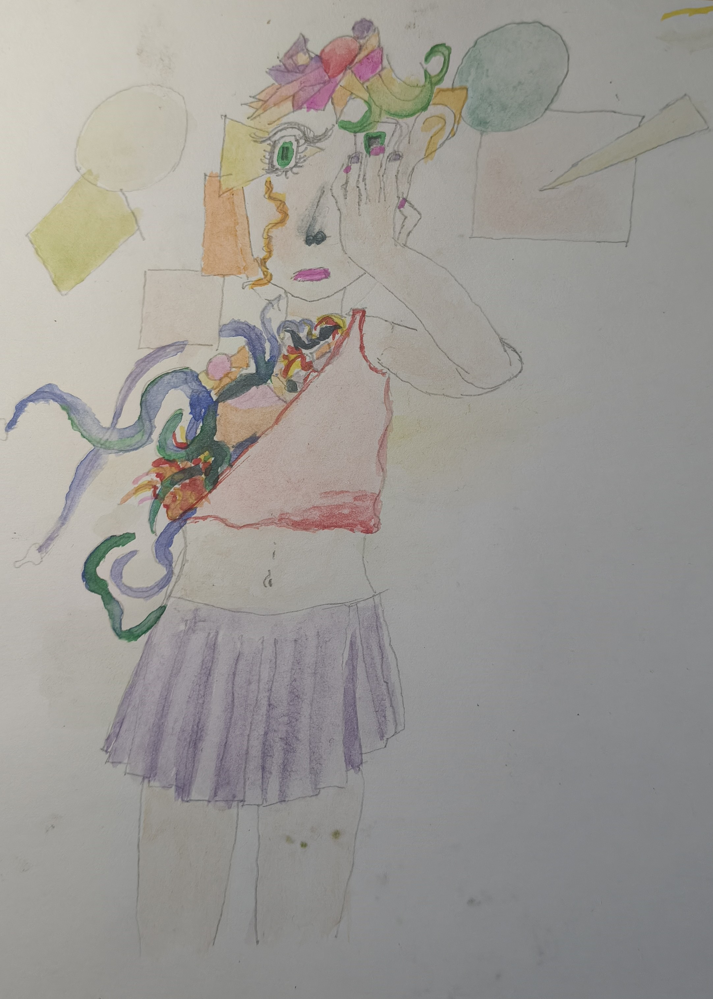
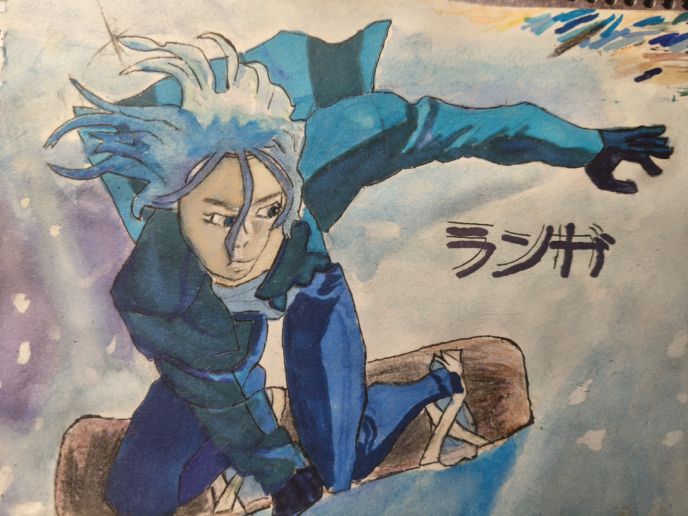
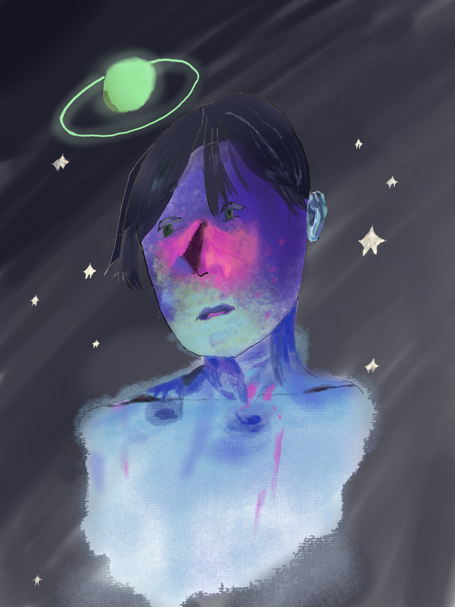

Artworks:




I like programming, drawing and language learning. I'm currently a 4th year computer science student at Aristotle University of Thessaloniki, and I'm looking to learn more about machine learning and neural networks.
Using jax.js, Svelte webgpu and an inception-like neural net
Coded as part of computer graphics course in 2026
Using slqlite3 wasm, the Origin-Private FileSystem (OPFS) and Lit.js
Coded in middle school as part of a project at Idrogios - using chart.js and leaflet


